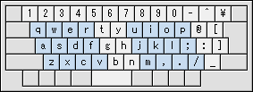
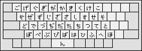

eelll/JS memo
eelll/JS や、漢字直接入力 (主に練習方法について) に関する、いろいろな覚え書きです。
文字ヘルプ (ヒント)
T-Code や TUT-Code などの、 無想式直接入力 では、コードの表現方法 (文字ヘルプ) の読み方を覚えることが、直接入力を修得するための第一歩です。まずは、 打鍵図 の読み方を覚えましょう。
打鍵図
tc2 や 橋田表 など、 T-Code でよく用いられている図示で、 キーボードを模式的に表す図を用いて、空間的にコードを表現する方法です。 「ドット表現」とも呼ばれます。
 打鍵図では、「・」が、キーボード上の、左右の手の四指のホームポジションと、 その上下の段のキー (右図のキーボードの青く塗られたキー) を示します。 最上段の数字キーや、人さし指をキーボード中央側にずらして打つキーは空白です。 このような図で、「●」で第一打鍵の位置を、「○」で第二打鍵の位置を示します。
したがって、はじめ図の例は、QWERTY 配列での「l4」、 Dvorak 配列での「n4」というコードを表しています。
第一打と第二打の位置が同じキーの場合 (ここでは「二重打鍵」や「重打」と呼ぶ) は「◎」で表わします。 TUT-Code などの第三打鍵は「△」、第四打鍵は「◇」となります。 TUT 記号などで使われるスペースキーは表記できません。
打鍵の順序を示す記号は、 漢直Win 1.27* の文字ヘルプと共通で、 tc2 ともほぼ同じです (tc2 では、三重打鍵にも「◎」を使っていたかもしれません)。
- ● … 第 1 打鍵 → 囲碁などと同じで、黒が先、白が後
- ○ … 第 2 打鍵 → (同上)
- △ … 第 3 打鍵 → 「三」角形
- ◇ … 第 4 打鍵 → 「四」角形
- ◎ … 二重打鍵 → 「二重」丸
- ☆ … 三重打鍵、または、(二重打鍵が二つある場合の) 二つめの二重打鍵 → (??)
歴史的には、はじめは「○」が第 1 打鍵、「●」が第 2 打鍵を表していたが、 のちに「● → ○」の順に変更されたようです [tcode-ml:243,988]。
T-Code を拡張した Try-Code と TT-Code は、いずれも、特定のキーを T-Code の通常の二打鍵の前に打鍵することによって、一時的に表を切り換える拡張方式です。 Try-Code では Space によって 連想表 と呼ばれる拡張表に切り換え、 TT-Code では jf と fj (QWERTY 配列) または hu と uh (Dvorak 配列) の二種類のキー列によって、それぞれ 右表 と 左表 と呼ばれる二種類の拡張表に切り換えて入力します。
このような拡張用の特定のキー (またはキー列) を、ここでは prefix と呼ぶことにします。
Try-Code や TT-Code などの prefix 拡張型の T-Code では、 文字ヘルプを、 prefix を取り除いた二打鍵 (ここでは順に 初打 と 終打 と呼ぶ) のみを、prefix によって異なる特別な記号で表示します。
Try-Code
Try-Code は、 「Space + ??」 という三打鍵で、連想表から文字を入力しますが、 このとき、連想表の初打を「■」で、終打を「□」で表わします。 重打の場合は「回」となります。
たとえば、図の例では、「括」は 「Space + dd」 (QWERTY 配列) または 「Space + ee」(Dvorak 配列)、 「弧」は 「Space + q4」(QWERTY 配列) または 「Space + '4」(Dvorak 配列) というコードであることを示しています。
TT-Code
TT-Code では、 「jf + ??」(QWERTY 配列) または 「hu + ??」(Dvorak 配列) で右表から文字を入力し、 「fj + ??」(QWERTY 配列) または 「uh + ??」(Dvorak 配列) で左表から文字を入力しますが、 このとき、右表と左表の初打を、それぞれ「▲」と「▽」で表わします。 終打は、右表、左表ともに「○」です。 また、右表と左表の重打は、初打と同じ記号で、それぞれ「▲」と「▽」と表します。
たとえば、図の例では、「頂」は 「jf + hs」(QWERTY 配列) または 「hu + do」(Dvorak 配列)、 「戴」は 「fj + uu」(QWERTY 配列) または 「uh + gg」(Dvorak 配列) というコードであることを示しています。
英字
素直に、キーボードのキートップの英字 (a—z 0—9 ; , . /) でコードを表す表記法です。 TUT-Code で比較的よく用いられます (たとえば、 TUT-Code の本家で配布されている、標準的な漢字テキスト kanji_a1.txt, 練習プログラム SFCxTYPE, 検索プログラム TUTSearch のいずれでも、この表示法が使われています)。
Try-Code や TT-Code などの、prefix 拡張型の T-Code では、 prefix を示す記号に続けて、 prefix を取り除いた二打鍵 (初打、終打) を表記して表します。
たとえば、 Try-Code の『括弧』は 「■dd ■q4」(QWERTY 配列) または 「■ee ■'4」(Dvorak 配列)、 TT-Code の『頂戴』は 「▲hs ▽uu」(QWERTY 配列) または 「▲do ▽gg」(Dvorak 配列) となります。 (Try-Code では、連想による拡張という設計の哲学を考えると、 「■活 ■孤」と書くのが、あるべき姿かもしれません)
橋田ニモニック
 図のように、 T-Code で用いる 40 キーに割りつけたひらがなでコードを表す方式です [tcode-ml:2006,2012]。
橋田ニモニックでは、たとえば、 T-Code の『漢』は「てぎ」、 TUT-Code の『漢』は「さひじ」となります。
キーボード上の各キーと、かなの対応は、次のとおり。
- 最上段は「か行」、上段は「さ行」、中段は「た行」、下段は「は行」
- 人さし指は「あ・い段」、中指は「う段」、薬指は「え段」、小指は「お段」
- 右手は清音、左手は濁音
なお、もともとの橋田ニモニックにはスペースキーへの割り当てはありませんが、 eelll/JS では、 TUT-Code の記号などを配慮して、 スペースキーには「ん」を割り当てています。
ストローク表 (木を見て森を見る表)
RL ・・・・・ ・・・・・ ・・・・・ ・・・・・ ・・・・・ 請境系探象 尚賀岸責漁 舎喜幹丘糖 布苦圧恵固 姿絶密秘押 盛革突温捕 益援周域荒 康徒景処ぜ 邦舞雑漢緊 衆節杉肉除 依繊借須訳 織父枚乱香 譲ヘ模降走 激干彦均又 測血散笑弁 酸昼炭稲湯 貿捜異隣旧 攻焼闘奈夕 盤帯易速拡 汽換延雪互 歩回務島開 キせ区百木 や出タ手保 コ山者発立 ナ金マ和女 給員ど代レ 分よル千ア ７か（トれ きっ日国二 上く８え年 相家的対歴 付プばュ作 内工八テ見 九名川機チ サ建パ第入 桜瀬鳥催障 典博筋忠乳 採謡希仏察 君純副盟標 犯余堀肩療 中スもお定 わラ東生ろ う４）十リ あこ６学月 本さら高シ ３と〇てる ーした一が い、の５１ 。‐０・２ ではになを ッ人三京ち ロク万方フ んまンつ四 けイす電地 業時「長み 呼幅歓功盗 紀破郡抗幡 房績識属衣 去疑ぢ綿離 秒範核影麻 店持町所ほ 全じ自議明 バ部六経動 後間場ニ産 問ム七住北 行ド円小ジ 通カ社野同 だり―め大 新」９子五 事田会前そ 海道ず西げ 当理メウグ 不合面政オ 委化ビ目市 気売下都株
tc2 や EELLL, DOGGG などで、打鍵図とともに T-Code でよく用いられる図示です。 ストローク表は RL, RR, LL, LR の 4 つの部分表に分かれています。 各部分表の中では、大きく 5×4 にブロックが並び、 各ブロックの中で、やはり 5×4 に文字が並んでいいます。
部分表とブロックは、どちらも、 キーボードの右手側または左手側の半面を表しています。 文字がブロックの中でどこにあるかが、その文字の第一打鍵の位置を示し、 ブロックが部分表全体の中でどこにあるかが、第二打鍵の位置を示します。
図は、ストローク表のうちの RL 表です。 この表から、たとえば『漢』のコードは、次のように読みとることができます。 まず、表の左上に「RL」とあることから、 「第一打鍵が右手、第二打鍵が左手」(Right to Left) であることが分かります。 次に、『漢』が、5×4 ブロックの、中段、左端から 4 列目にあることから、 第一打はキーボード右手側、中段、薬指となります。 また、『漢』を含むブロックが、表全体の、 最上段、右端から 2 列目にあることから、 第二打はキーボード左手側、最上段、人さし指となります。 結局、『漢』の打ち方は、 「右手・中段・薬指 → 左手・最上段・人さし指」となりることが分かります。
このように、 表の内側から外側へと読ませることによって、コードを表現することから、 ストローク表は「木を見て森を見る」表とも呼ばれます。
References
- [tcode-ml:988]
- 前田薫,
filled circle vs. white circle,
1996-02-29.
- →
第一打鍵を○、第二打鍵を●としたのは、単にJIS文字コード 順とか、そういういいかげんな基準で決めてしまったのですが、 実際に表を使うときには色が濃い方が目立つので、今は●を第 一打鍵としています。最初に認知科学の専門家に相談していれ ばこんなことにならなかったのでしょうけど
- →
私はぬりつぶしてある●をパッと見つけ、それを打っている間に見つか りにくい○をさがします。第一打鍵を打ち終えるころには第二打鍵が見 つかっているという感じです。
- →
- [tcode-ml:2006]
- 橋田 (HASIDA Koiti),
[tcode-ml:2006] Re: Mnemonic,
2001-11-09.
- →
ニモーニックになっていれば忘れても簡単に思い出せて習得のコストが小さくなる可能性は大いにあると思います。
,- →
というわけで提案ですが、下のように40個のキーにひらがなを割り当ててニモーニックを定義して使ってみるというのはどうでしょうか。
- →
- [tcode-ml:2012]
- 橋田 (HASIDA Koiti),
[tcode-ml:2012] Re: Mnemonic,
2001-11-09.
- →
仮名と指の位置をシステマティックに対応付けている
- →
- [tcode-ml:2033]
- 北嶋暁,
[tcode-ml:2033] Re: tc-2.2pre2,
2001-12-13.
- → tc-2.2pre2 で
橋田さんが提案されたニーモニックでヘルプを表示する設定
- → tc-2.2pre2 で
eelll/JS の練習テキスト
eelll/JS に組みこんでいる練習テキストについて記します。
EELLLTXT
- T-Code 用の標準テキスト。 T-Code の基本文字 (現在は 1353 文字) のうち、約 1200 字をカバーする。 「うなぎぎぎてきすと」と読む。
- 出典は tc 2.3.1 の EELLLTXT (DOGGG の練習テキストもほぼ同じ内容)。
- eelll/JS に移植する際に、次の変更を行った。
- 語の区切りの半角空白 2 つを 1 つにした (Lesson 21–25, 211, 454)。
- Lesson 600 番台の熟語レッスンの語の区切りの『・』を半角空白にした。
→ 語の区切りが、半角空白 2 つや『・』だったのは、 DOGGG の LCS アルゴリズムの仕様 (文字の区切りが 2 バイトごとになければならない) に合わせたものではないかと思われる。 - Lesson-chars (各レッスンの最初に、ヒントが表示される文字)
を適当に (新出文字だけに) 絞りこんだ。
→ tc 2.3.1 の EELLLTXT では、各レッスンに出現する全文字を、 機械的に拾い出して Lesson-chars としているようだが、 対象の文字数が多くなりすぎて、 かえってヘルプ表から索字するのが困難になっているように思われる。
- 現在 680 課まであるが、
番号は次のように、レッスン内容で分類して振られており、
実際の課数は 197 課。
- 000 番台・100 番台 → かな・記号・数字・『年月日時分円人』など
- 200 番台 → 漢字 (RL)
- 300 番台 → 漢字 (RR)
- 400 番台 → 漢字 (LL)
- 500 番台 → 漢字 (LR)
- 600 番台 → 漢字 (RL!・LR!)
- → 各レッスンの内容の詳細は EELLLTXT のもくじ を参照。
- 足りないと思われるレッスンがある。 ひらがなの『ゆ』、RR・LL・LR のかたかな、RR!・LL! の漢字、など。 復習用のレッスンも、途中でとぎれていると思われるところがある。
- いくつかのレッスンが長すぎて、練習者にとってつらい (たとえば 213) ので、 短く分割した方がいいのではないだろうか。
kanji_a1.txt
- TUT-Code の漢字の標準的なテキスト。 TUT-Code の二打鍵の漢字 (725 字) のうち、 約 320 字を全 60 課でカバーする。
- 出典: 大岩千穂子さんの 以前の TUT-code Home Page || 過去の TUT-code Home Page の 習得と練習テキスト の kanji_a1.txt (漢字練習テキスト A1)。
- 「漢字練習テキスト A2」は未完成とのこと [tut-code:0000398]。
- tc 2.3.1 の EELLL にも、 EELLLTXT.tut として移植されている。
- 原本にある誤植を修正した。
[第 38 課] 「科学の進歩はどとまるところを知らない。」 → 「科学の進歩はとどまるところを知らない。」
[第 60 課] (320+7) → (320+0)
EELLLTXT-ttr, EELLLTXT-ttl
- TT-Code の拡張部分の文字を対象に、 筆者 (ゆせ) が pubdic などから熟語を拾って作ったテキスト。
- 出典: 安宅さんが The code name is T. で公開してくださっている EELLLTXT.tt.gz。
- EELLLTXT.tt.gz は、 新出文字を覚えるためのランダムレッスン (1000 番台) と、 復習用の熟語レッスン (2000 番台) を含む。 eelll/JS では、ランダムレッスンを割愛し、熟語レッスンを加筆した。 特に左表の練習のために、EELLLTXT-ttl (3000 番台) を新設した。
- 内容は、T-Code で外字扱いになっている文字のうち、 常用漢字約 830 字 (EELLLTXT-ttr)、および、 その他の第一水準の漢字約 980 字 (EELLLTXT-ttl)。 語の順序はランダム。 EELLLTXT と EELLLTXT-ttr までをマスターすれば、 日常的な文章は、ほぼ直接入力だけで足りるようになるようだ (人名や地名を除く)。 EELLLTXT-ttl の内容に関しては、 TT-Code 左表の文字すべてを習得するというのは、 あまり現実的ではなく、再検討の余地あり。
- EELLLTXT-ttr は、T-Code で外字となっている常用漢字を網羅しているので、 Try-Code の拡張部分の復習にも適しているのではないかと思う。
常用漢字
- 常用漢字 2136 文字を対象にした汎用テキスト。
- 出典: オリジナル。
- 「常用漢字 (学年・級別)」は、常用漢字 2136 文字を、配当学年順に練習するテキスト。 1 課ごとに 5 文字ずつ新出漢字を増やしていく。 各配当学年内の漢字の出題順は、おおむね漢字の読みの五十音順。全 430 課。
- 「常用漢字 (復習)」も、同様に 430 課で常用漢字 2136 文字を練習するが、こちらは最初から全ての漢字が出題される。 「常用漢字 (学年・級別)」を一通り練習し終えた人向け。
Reference
- [tut-code:0000398]
- 大岩千穂子,
[tut-code:0000398] Re: 漢字練習テキストＡ２,
2001-01-26.
- →
A1（320字まで）は、1課から順番にやって全部覚えることを前提に作って あります。従って既習漢字もできるだけバランスよく出現するように配慮し たつもりです。
- →
続きのA2ですが、作りかけで２年も放置しておりました・・。
,今見たら、150字分ぐらい作ってありました。
- →
練習の方法について
練習のやり方に関するノウハウを集めてまとめてみたい。
tc2 info (tc.info)
tc 2.3.1 のマニュアル tc.info の [Tコードの練習]-[練習のヒント] から。
練習のヒント
練習は基本的にはテキストの順に行えばよいのですが、ひらがなをだいたい 覚えたら、数字やカタカナなどは後まわしにして、漢字に進んでも構いません。 漢字が簡単に入力できることを早目に体験しておくと、練習意欲が増すかもし れません。
さて、練習にあたって心がけておくとよい点をあげておきましょう。
- 指の動きでコード(キーの入力順)を覚える。
例えば「kd」で「の」という覚え方ではなく、「右手中指→左手中指」 の動きで「の」というように覚えましょう。
- 入力はリズムよく。
正確に打つことも大事ですが、一定のリズムで入力することがもっと重 要です。EELLLでは、1行の入力が終わるまで入力した文字列が画面上に 現れないようになっていますが、それはリズムを重視した練習を行いや すくするためです。
- 練習は継続的に。
毎日決まった量(時間)を練習しましょう。なお、1日に2時間以上練習し ても効果は上がらないそうです。30分とか1時間とか、時間を決めて効率 的に練習しましょう。
- 覚えたはずの字のコードを忘れても気にしない。
人間誰でも忘れるもの。忘れたらまた覚えればいいだけのことです。
T-Code ML
T-Code メーリングリストの過去記事から ([tcode-ml:294], [tcode-ml:453], [tcode-ml:1645])。
- 速度よりも正確さを重視すること。 エラーレート 5% 未満が目安。
- 速度は遅くてもリズムを一定に保つほうがいい。
- EELLLTXT で練習する場合、 10 ～ 20 のレッスンを平行してやるとよい。
- (T-Code の場合) ひらがな・かたかな・数字をすべてマスターする前に、 漢字の練習を開始した方がよい。
References
- [tcode-ml:294]
- 前田薫,
DOGGG vs. business,
tcode-ml:294,
1992-05-11
- →
「実務で使いながら覚える」レベルまで行くのが結構大変
,使いながら覚えるのをあきらめて、使うときは使う、習うときは習うというふうにしては
,- テキストの
内容を気にすると効率が下がるといわれています
,私の経験から言うと速度より誤 打鍵に重点を置いたほうがいいと思います。それに速度は遅く てもいいからリズムが一定のほうがいいですね。「タタッタタッ タタッタタッ」という 250ms. を目指すよりは「タンタンタン タン」という 350ms. を目指してください。
- →
- [tcode-ml:453]
- 前田薫,
My semi-certain strokes,
tcode-ml:453,
1993-09-14.
- →
ゆっくりでもいいか ら、同じリズムでミスなく打てることが大事です。エラーレー トが5%を切らないうちは、スピードを遅くしてでも正確に打鍵 するよう心がけましょう。
- →
- [tcode-ml:1645]
- 前田薫,
[tcode-ml:1645] Re: typing speed with kana-kanji henkan,
2000-05-09.
- →
doggg/EELLLの練習テキストを使う場合のコツですが、10～20のレッス ンを平行してやるとよいです。ひらがなを卒業する前に漢字の練習を開 始した方がよい、と言いかえた方がいいかもしれません。
- →
数字のレッスンが苦痛になることはよく知られて いますので、ほどほどにサボりましょう。早めに漢字に突入した方が T-Codeのうれしさがわかり、情熱が上がります。
- →
誤字判定アルゴリズムについて
T-Code や TUT-Code の練習プログラムに限らず、 一般のタイピング練習プログラムにおいては、 テキストの問題文と練習者の入力文を比較して、 入力ミスを見つけ出す誤字判定アルゴリズムはたいへん重要なものです。 ここでは、 eelll/JS の誤字判定アルゴリズムについて、 少しだけ触れておこうと思います。
誤字判定の意義と難しさ
DOGGG や EELLL は、他の多くのタイプ練習プログラムと異なり、 練習者のタイプミスをその場で指摘したり訂正を求めたりせず、 かわりに一行の入力が終わるごとに、まとめてエラーを示すという方法をとっています。 これは、スムーズなタイプ作業の形成を妨げないための配慮であり、 入力したキーをエコーバックしないのも、この理由によるものです [HOY82], [tcode-ml:1090]。
このような設定で、練習者の学習を効率的に支援するためには、 入力されたひとまとまりのキー列から、“正しい”部分と“そうでない部分”を、 練習プログラムの側がうまく判断することが必要となります。
たとえば、『なのはなははるのはななの』という問題文に対して、 練習者は『なのはるなはなるのはなはなの』と入力したとします。 全体をみると両者は異なる文字列ですが、 次のように部分部分をうまくマッチさせると…
| 打鍵列 | ||||||||
|---|---|---|---|---|---|---|---|---|
| 問題文 | なのは | なは | は | るのはな | なの | |||
| 入力文 | なのは | る | なは | な | るのはな | は | なの | |
『る』と『は』が余分であった一方で、 『は』を『な』とミスタイプしたこと、そしてここが重要なのですが、 それ以外の部分は正しく入力したこと、が分かります。
このような部分部分のマッチングは、T-Code や TUT-Code のように、 (冗長度の低い符号化を行っている) 2 ストローク系入力方式の場合は、 特に重要です。
たとえば、『なのはなははるのはななの』 (『lgkdjglgjgjg;akdjglglgkd』) (QWERTY 配列での T-Code の打鍵列、以下同様) と入力するべきところを、 誤って『lgkkdjglgjgjg;akdjglglgkd』 と打鍵した場合を考えてみます。 このとき、入力キー列を単純に T-Code として解釈すると 『なエ助言流流渋基助言言争d』 となり、ほとんどの文字を誤入力したことになってしまいます。 しかし、もし最初の『lgk』の以降の 『kdjg…』以降の部分が互いに一致することを検出することができれば、 実は誤りは『k』 の 1 打鍵だけだったと (正しく) 判断できるのです。
タイピング練習プログラムにおいて、 まちがった入力を正しいと誤判定するのは、もちろんしてはいけないことですが、 正しいはずの入力を誤りであると誤判定することも、 非常に好ましくないということに注意しておきたいところです。 なぜなら、そのような誤った判定は、練習者の学習意欲を低下させるだけでなく、 文字から打鍵列という反射運動の形成を阻害しかねないと思われるからです。
しかし、だからといって、問題文と練習者の入力キー列を比較するだけで、 誤りを過不足なく正確に指摘することは、必ずしも可能であるわけではありません。 たとえば、『必要』(shhh) という問題文に対して、 練習者のキー入力が『hshhh』であった場合、 (1) 『h必要』(『h』が余分)、 (2) 『hs要h』(『必』を逆に打ち、 さらに『h』が余分――ストロークを逆順に打ってしまうのはよくある間違いです)、 の二通りの解釈が可能となります。 しかし、練習者のミスが実際にはどちらであったのかは、 練習者自身にしか分からないでしょうし、 練習者自身にも必ずしも分からないかも知れません。
ただ、「練習者の入力を最も好意的に解釈して、 最も誤りが少なくなるような判定を (とりあえず) 示す」という方針は、 自然に見え、また、多くの場合でうまく働くように思えます。 そのような理由から …かはよく分かりませんが、 T-Code の世界では、誤字判定に LCS (Longest Common Subsequence) を用いるのが伝統になっています (たとえば [HOY82])。 LCS とは、与えられた二つの列 (ここでは打鍵列) の中の、 互いに共通する部分部分 (の組み合わせ) のうち、 長さの総和が最も大きくなるようなものを指します。
LCS は Unix の diff のアルゴリズムにも用いられている …らしく、 また、LCS を計算するためのアルゴリズムも、 すでに様々なものが研究されている …らしいです。
しかし、T-Code や TUT-Code などの 2 ストローク系入力方式の場合、 単純にキー列の LCS をとるだけでは不十分です。 たとえば、『はるの』(jg;akd) という問題文に対して、 練習者が『kg;aks』と入力した場合を考えてみます。 単純なマッチングでは、真中の 4 打鍵 『g;ak』が lcs となってしまいますが、 入力列『kg;aks』は、T-Code として解釈すると『にるた』となるので、 有効な LCS は (『る』に対応する) 『;a』の 2 打鍵のみになります。
つまり、2 ストローク系入力方式の場合は、 “コードの境界”を意識した比較を行うことが必要となります。 特に、TUT-Code は、コードの長さが一定でない (2 ストローク・3 ストローク・4 ストロークコードが混在する不定長コード) ために、すべてのコードが 2 ストローク (固定長コード) である T-Code に比べて問題が難しくなる傾向がある …かもしれません。
各練習プログラムの誤字判定の比較
eelll/JS は、 非常に精度のよいすばらしい誤字判定機能を備えているのですが、 以下では、このことを伝えるために、 他の代表的な T-Code または TUT-Code の練習プログラム DOGGG, EELLL, SFCxTYPE をとりあげて、 その誤字判定の様子を比較してみます。
比較には、次の二つの例を用いることにします (この例文は、有名な EELLLTXT の Lesson 1 からとったものです)。
- 例 1: 問題文『の、が、のが』(kdjd;sjdkd;s) に対して、 入力文『たの、が、のが』(kskdjd;sjdkd;s) を与える。
-
このときの望ましい誤字判定は、 『ksの、が、のが』 である。
- 例 2: 問題文『の、が、のが』(kdjd;sjdkd;s) に対して、 入力文『、の、が、のが』(jdkdjd;sjdkd;s) を与える。
-
このときの望ましい誤字判定は、 『jdの、が、のが』 である。
この二つの例は、特に人工的な例というわけではないことを、 強調しておきたいところです。 たとえば、例 1 は、『の』(kd) を打つつもりで『た』(ks) と打ってしまった状況ですが、 このように、第一打鍵が同じ (別の) 文字を誤って打ってしまうのは、 学習初期に特によくみられるミスです。 また、例 2 も、『の』をとばして先に『、』を打ってしまった状況ですが、 このように 1 ～ 2 文字先の文字を打ってしまうのも、 先読みと打鍵のタイミングが合わない場合によく生じるミスです。
DOGGG の誤字判定
DOGGG は、山田研究室で開発されたタイプ練習プログラムで、MS-DOS 上で動作します。 MacOS にも Doggg for Macintosh として移植されています。 T-Code 専用であり、1 文字のコードの長さを 2 と決め打ちしています (2 ストロークコードの範囲でテーブルをカスタマイズすることは可能)。 したがって、TUT-Code のような不定長ストロークのコード体系には対応していません。
DOGGG は、たいていの場合には (以下の例 2 のように) 望ましい判定を返しますが、 特定の状況で (例 1 のように) 採点の取りこぼし (正しい打鍵列を誤りと判定) をしてしまいます。
- 例 1: 問題文『の、が、のが』(kdjd;sjdkd;s) に対して、 入力文『たの、が、のが』(kskdjd;sjdkd;s) を与える。
-
このとき、DOGGG は、 『kskd、が、のが』という (望ましくない) 判定結果を返す。 次のように判定を行っていると思われる。
打鍵列 問題文 k d jd ;s jd kd ;s 入力文 kskd jd ;s jd kd ;s 判定 kskd 、 が 、 の が 入力文の先頭の『ks』を typo として読みとばせば、 その次の『kd』が正しい入力と判断できるはずなだが、 実際は『kskd』全体を typo と判定してしまっている。 おそらく、先頭の『k』でマッチングを行ってしまっているようだ。
- 例 2: 問題文『の、が、のが』(kdjd;sjdkd;s) に対して、 入力文『、の、が、のが』(jdkdjd;sjdkd;s) を与える。
-
このとき、DOGGG は、 『jdの、が、のが』という (望ましい) 判定結果を返す。
DOGGG のアルゴリズムを調べてみると、 まず (1) 問題文と入力文を (単純にストローク列として) 比較し、 一致するストロークをすべて拾い出す、 次に (2) そのすべての可能な組み合わせの中から、 最も成績のよいものを一つ選んで (とりあえずの) LCS とする、 最後に (3) この (とりあえずの) LCS に 2 ストロークごとの区切りを入れて、 最終的な判定結果とする、 という段階を踏んでいる …ようです。
このうち、(1) と (2) のステップでは“コードの境界”は無視されています。 (3) のステップの操作が“コードの境界”を意識したものなのですが、ここで 2 ストロークの区切りと “コードの境界”が一致しなかった部分は誤入力としてしまう …ようです。
結局、“コード境界”を意識しない (1), (2) と、 それを意識する (3) がうまくかみ合わない場合 (上記の例 1 のように) に、 最終的な結果が真の LCS にならなくなってしまうのだろうと思われます。
EELLL の誤字判定
EELLL は、
Emacs 上の T-Code 入力環境
tc2
に付属する練習プログラムです。
もともとは DOGGG と同様に、T-Code 専用であり、
すべてのT-Code文字(漢字)が2打鍵であることを考慮して、
誤打鍵が最も少なくなるような採点結果(のうちの一つ)を出力
[tcode-ml:1522]
するアルゴリズムを採用していましたが、
tc-2.2 から TUT-Code などの不定長ストロークにも対応するようになりました
[tcode-ml:1997]
。
EELLL は、以下のように、 DOGGG がうまく扱えなかった例 1 もうまく処理しますが、 その一方で、例 2 のような癖のある挙動を示すことがあります (tc-2.3.1 現在)。
- 例 1: 問題文『の、が、のが』(kdjd;sjdkd;s) に対して、 入力文『たの、が、のが』(kskdjd;sjdkd;s) を与える。
-
このとき、EELLL は、 『ksの、が、のが』という (望ましい) 判定結果を返す。
- 例 2: 問題文『の、が、のが』(kdjd;sjdkd;s) に対して、 入力文『、の、が、のが』(jdkdjd;sjdkd;s) を与える。
-
このとき、EELLL は、 『、のjdがjdkd;s』 という (望ましくない) 判定結果を返す。 次のように判定を行っていると思われる。
打鍵列 問題文 kd jd ;sjd kd ;s 入力文 jd kd jd ;s jdkd;s 判定 、 の jd が jdkd;s 入力文の先頭の『、』が typo なのだが、これを、 問題文を先読みして現れる (2 番目の)『、』とマッチさせてしまっている。 このため、望ましい判定 (『jdの、が、のが』) とはほど遠い結果となってしまっている。 このような先読みは 2 文字程度先まで働いてしまうことがある (e.g. 問題文『の、が、のが』に対して、 入力文『が、の、が、のが』を与えた場合など)。
T-Code メーリングリストで、 (不定長コードに対応する以前の EELLL に対して) この問題が報告され、 一応のパッチが示されている [tcode-ml:1112,1113] が、現在の EELLL には反映されていないようだ。 ちなみに、現在の EELLL はかなり elisp コードが変更されている (おそらく不定長コード対応のために) ので、このパッチは適用できない。
EELLL のアルゴリズムを調べてみると、 まず (1a) 問題文と入力文を (“コード境界”を意識して) 比較し、 一致するコードをすべて拾い出す、という作業と、 (1b) その可能な組み合わせの中から、 その時点で最も成績のよさそうなもの一つに絞りこむ、 という作業を同時に進め、その後に (2) 得られた組み合わせを、そのまま LCS として返す、 ということを行っている …ようです。
(DOGGG と異なり) はじめから“コード境界”を意識した比較を行っているので、 DOGGG で見られた採点のとりこぼしの問題は解消されていますが、 どうも (1b) の「複数の (というか 2 つの) 候補の中から 1 つを選び出す判定条件」 がバグっているのではないかという気がします (ストロークと文字を同じ重みで比較してしまっているのではないだろうか…)。 そもそも、(1a) の作業が完了しないうちに、 (1b) の絞りこみを行うということを (不定長コードを含む 2 ストローク系入力方式の場合にも) してしまってよいものか、筆者には疑問に感じられます。
SFCxTYPE の誤字判定
SFCxTYPE は、大岩元研究室 (慶應大学) で開発されたタイピング練習プログラムです [Takeda2004]。 標準では、TUT-Code と QWERTY ローマ字入力に対応していますが、 T-Code などの他の入力方式に対応させること、 また練習テキストを追加することも可能です。 ソースファイルは公開されていないようであり、 どのような誤字判定アルゴリズムを用いているのかはよく分かりません。
- 例 1: 問題文『の、が、のが』(kdjd;sjdkd;s) に対して、 入力文『たの、が、のが』(kskdjd;sjdkd;s) を与える。
-
このとき、SFCxTYPE は、 『正誤結果は:[×,○,○,○,○,○] / 正解率は:83%』という判定結果を返す。 望ましい判定なのか望ましくない判定なのか一見分かりづらいが、 ○・× の数と正解率を考えると、 おそらく次のような判定であると思われる。
打鍵列 問題文 kd jd ;s jd kd ;s 入力文 kskd jd ;s jd kd ;s 判定 × ○ ○ ○ ○ ○ DOGGG と同様に、正しいはずの「kd」が、 先行する「ks」とともに誤りと判定されてしまっているようだ。
- 例 2: 問題文『の、が、のが』(kdjd;sjdkd;s) に対して、 入力文『、の、が、のが』(jdkdjd;sjdkd;s) を与える。
-
このとき、SFCxTYPE は、 『正誤結果は:[×,○,×,○,×,○] / 正解率は:50%』という判定結果を返す。 これも、○・× の順序を考えると、 おそらく次のいずれかの判定であると思われる。
打鍵列 問題文 kd jd ;s jd kd ;s 入力文 jd kd jd ;s jdkd;s 判定 × ○ × ○ × ○ ― 打鍵列 問題文 kd jd ;s jd kd ;s 入力文 jd kd jd ;sjdkd ;s 判定 × ○ × ○ × ○ EELLL と同様に、誤打鍵と見なすべき先頭の「jd」を、 問題文を先読みした部分にマッチさせてしまっているように思える。
eelll/JS の誤字判定
eelll/JS は (名前とはうらはらに)、 EELLL のコードを全く受け継がず、大部分は scratch から書かれましたが、 誤字判定アルゴリズムに関しては、後述のように、 DOGGG のものをもとにした素直なものを用いています。 EELLL と同様に、不定長コードに対応しています。 特に、長さ 1 のコードにも対応しており、英文タイプの練習にも用いることができます (eelll/JS は、コードの割り当てられていない文字に対しては、 その文字自身をコードと見なす仕様になっているので)。
eelll/JS は、例 1, 2 のいずれに対しても、望ましい判定結果を返します。
- 例 1: 問題文『の、が、のが』(kdjd;sjdkd;s) に対して、 入力文『たの、が、のが』(kskdjd;sjdkd;s) を与える。
-
このとき、eelll/JS は、 『ksの、が、のが』という (望ましい) 判定結果を返す。
- 例 2: 問題文『の、が、のが』(kdjd;sjdkd;s) に対して、 入力文『、の、が、のが』(jdkdjd;sjdkd;s) を与える。
-
このとき、eelll/JS は、 『jdの、が、のが』という (望ましい) 判定結果を返す。
eelll/JS の誤字判定は、 まず、 (1) 問題文と入力文を (“コード境界”を意識して) 比較し、 一致するコードをすべて拾い出す、 次に、(2) そのすべての可能な組み合わせの中から、 最も成績のよいものを一つ選んで LCS とする、 最後に、(3) 得られた LCS はすでにコード区切りが入っているので、 これをそのまま返す、 という段階を踏んで行われます。
(DOGGG と異なり) はじめから“コード境界”を意識した比較を行っている (「ストロークを拾い出す」のではなく、「コードを拾い出す」) ので、 DOGGG で見られた採点のとりこぼしの問題はなく、 TUT-Code のような不定長コードにも対応しています (これは EELLL の手法と同様)。 しかし、 EELLL と異なり、一致するすべてのコードの拾い出しが完了した後で、 はじめて最適な組み合わせを探索します。 したがって、ここで得られた LCS は、真の LCS となります。
このことから、eelll/JS は、 どのような問題文と入力文の組み合わせに対しても、 常に最適な判定 (最適なものが複数あるときは、そのうちの一つ) を返します …と作者は思っています。
補足
eelll/JS での最適解およびエラーレートの定義
eelll/JS では、“最適な LCS”は、 “入力文のうち、問題文と一致する文字のストローク数の総和を、 最も大きくするもの”と定義しています。 これは、「一致する文字数を最も大きくするもの」では、 必ずしも、ありません (不定長コードの場合)。
“エラーレート”は、 “(誤りストローク数) / (問題文のストローク数)”で与えます (「(誤りストローク数) / (入力ストローク数)」ではない)。 “誤りストローク数”は、 “(入力しないべきなのに) 入力してしまったストローク数”と、 “(入力するべきなのに) 入力しなかったストローク数”の和、と定義しています。
特に、“誤りストローク数”の定義で、 「実際に打たなかったエラー」と 「実際に打ったエラー」の両方をカウントしている点に注意されたい。
たとえば、EELLL (tc-2.3.1 に付属のもの) では、 問題文『の、が、のが』に対して、入力文『のが、のが』を与えると、 「エラーレート: 0.0%」と判定されるなど、 入力の不足がエラーとカウントされない場合があります。
また、 SFCxTYPE では、 問題文『の、が、のが』に対して、 入力文『の、が、のが。』を与えると、 「正解率は 100%」と判定されるなど、 余剰な入力がエラーとカウントされない場合があります。
これらは、 単なるバグなのか、採点のポリシーなのかはよく分かりませんが、 タイピング練習プログラムとしては、不自然な挙動であるように思います。
eelll/JS の制限
eelll/JS の「漢字 → コード」逆変換ルーチンでは、簡単のため、
(1) 一つの文字に割り当てられるコードは高々一つ、
(2) 二文字以上の列にコードは割り当てられない、
という制限を設けています (DOGGG や EELLL と同様)。
したがって、一般的なローマ字入力には、現状では対応していません
(たとえば、『し=si』かつ『し=shi』
といった定義ができず、
『った=tta』のような定義もできない)。
現在の eelll/JS の誤字判定能力を損なわずに、 この制限を取り除くのはあまり容易ではないように思われます。 たとえば、自明なアルゴリズムとして、 “与えられた問題文に対して、すべての可能なコード列を求め、 その各々に対して、入力文との LCS をとる”という手法がすぐに思い浮かびますが、 これではすぐに組み合わせ爆発を起こしてしまって、 だめである …ように思います。 SFCxTYPE はこの点をうまくクリアしていて、 ローマ字入力にもきちんと対応しているようです。 (一体どんな方法をとっているのだろう?)。
とはいえ、T-Code と TUT-Code は、 ともに「1 文字 1 コード」というシンプルなコーディングを採用しており、 これらの後に開発された 2 ストローク系入力方式も、 (おそらく T-Code や TUT-Code をお手本としてのことだろう) ほとんどがこのポリシーに倣っています (たとえば G-Code, 超絶技巧入力など)。
なので、「主な漢字直接入力方式のための練習環境の整備」を目的とした eelll/JS としては、現状で十分であると考えてもよいのでは …と思っていた …のですが、最近開発されている比較的新しい漢字直接入力方式には、 (入力のしやすさや、誤入力への対処を目的に) 一つの文字に複数のコードを割り当てる方式が徐々に増えつつある (たとえば phoenix 配列 や 奏コード || 漢直ノート――奏コード のかな部分) ことを考えると、あまり逃げてばかりもいられないような気がします…。
Reference
- [HOY82]
- 平賀譲, 小野芳彦, 山田尚勇.
日本語タッチタイプ入力コード用の練習システムの作成.
情報処理学会 第 25 回 (昭和 57 年後期) 全国大会 講演論文集 (II).
pp. 1089–1090.
- →
通常、練習者が入力したキーは画面には表示されず、カーソルのみが移動して入力位置を示す。練習者は提示された練習行全体を終わりまで打ち、入力途中ではエラーがあってもシステムからはそれを知らされず、中断も受けない。これは、エラーをいちいちその場で訂正させることはタイプのリズムを破壊し、練習者が打鍵の正しさを意識するようになり、無意識下でのリズミカルな動作であるタッチタイプを実現するためには好ましくないと考えられるからである。
- →
エラーチェックは、練習行と入力行の間の LCS (Longest Common Subsequence) を計算し、各行と LCS との相違を調べることによって生じたエラーの解析を行なうアルゴリズムを用いている
- →
- [tcode-ml:1090]
- 前田薫,
[T-code:1090] Stop trr,
1996-01-24.
- → タイプ練習ソフトの設計するうえで注意すべきこととして、
入力ミスを瞬時にフィードバックしてはいけない
,ひとつの入力ミスにより、先に進まないようにしてはいけない
,入力をエコーバックしない方がよい
. の三点。 その根拠として、山田先生のパイプライン仮説を挙げている。 - → タイプ練習ソフトの設計するうえで注意すべきこととして、
- [tcode-ml:1112]
- 北嶋暁,
[T-code:1112] eelll no saiten,
1996-07-17.
- → 問題文『はるになるとたのしい』に対して、 入力文『にるになるとたのしい』を与えた場合に、 判定『にるtinisaとたのしい』(Dvorak 配列で) が返されてしまう問題の報告と、対処パッチ案。
- [tcode-ml:1113]
- 前田薫,
[T-code:1113] Re: eelll no saiten,
1996-07-18.
- → 上記の [tcode-ml:1112] へのもう一つの対処法。
- [tcode-ml:1143]
- 斎藤靖, [T-code:1143] longest common sequence, 1996-12-23.
- → LCS
というのは、要するにdiffのアルゴリズムです。
- → LCS
- [tcode-ml:1521]
- 大岩元,
[tcode-ml:1521] Re: ｔｒｒってそんなにひどいですか？,
1999-04-13.
- →
問題は誤字の検出です。2ストローク入力の場合、どのように やったらよいか未だ検討していません。どなたか考えませんか。 なかなか人間なみの検出が出来ません。ニューロ等の最近の技術が使えないか と思います。人間のようにグローバルに見るアルゴリズムが必要そうです。
- →
- [tcode-ml:1522]
- 前田薫,
[tcode-ml:1522] Re: ｔｒｒってそんなにひどいですか？,
1999-04-13.
- →
前田@EELLLの採点アルゴリズム作成者です。
- →
EELLLの場合には、入力された打鍵列に対して可能な変換すべてのうち、 最も誤打鍵数が少ないものを出力しています。
- →
DOGGG由来のアルゴリズム は、打鍵列vs打鍵列の比較をしていたために減点が高い採点結果が出が ちだったのですが、EELLLではすべてのT-Code文字(漢字)が2打鍵である ことを考慮して、誤打鍵が最も少なくなるような採点結果(のうちの一 つ)を出力します。
- →
- [tut-code:0000415]
- 北嶋暁,
[tut-code:0000415] EELLL,
2001-03-10.
- →
TUTコードも使える Emacs 用Tコードドライバー tc-2.1 に付属の練習ソフトウェアであるEELLLを TUTコードでも練習できるようにしてみました。
- →
表示の部分は2ストロークにしか対応していませんが、 入力した文字列が正しいかどうかの判定では 3ストローク以上でも正しく扱えるはずです。
- →
- [tcode-ml:1997]
- 北嶋暁,
[tcode-ml:1997] Re: tc-2.2pre1,
2001-11-05.
- →
EELLL で TUT コードの練習ができるようにした。
- →
- [Takeda2004]
- 武田林太郎, TUTコード練習環境の提案, 2004.
関連リンク集
入力方式
- T-Code
- →
[本家]
Home of T-Code
- → [人可読形式の表] Home of T-Code - T-Code Software Distribution - aiueo-hasida.pdf (橋田表サンプル)
- → [人可読形式の表] T-code修行中 漢字直接入力のすすめ - T-code表 (五十音順の gif 形式の打鍵図) - t-table.zip (まとめたもの)
- → [機械可読形式の表] ntakahas' homepage - NPX - 世界一過激なキーボードカスタマイズ - Part 4 - QWERTY 用 | Dvorak 用
- → [人可読形式の表] Home of T-Code - T-Code Software Distribution - aiueo-hasida.pdf (橋田表サンプル)
- TUT-code
- →
[本家]
TUT-code Home Page
- → [過去の本家] TUT-code Home Page
- → [本家] Creative Workspace (CreW) - TUT-Code Web Site
- → 森田祐二氏のページ - TUT-Code (http://www.gar.sakura.ne.jp/tut-code/)
- → [m(as)m 氏のページ] /index - m(as)m's home position - /tutcode/index - TUT-Code (目次)
- → [m(as)m 氏の過去のページ] m(as)m's home position - TUT-Code
- → [過去の本家] TUT-code Home Page
- G-Code
- →
[本家]
/index - m(as)m's home position
-
/gcode/index - G-Code (目次)
- → [過去の本家] m(as)m: home position - G-Code (目次)
- 超絶技巧入力
- →
[過去の本家]
増田式キーボード学習法
-
超絶技巧入力
- → ベム の ホームページ - いろんな日本語入力体験コーナー - 『超絶技巧入力』を体験してみましょう (Java による体験アプレット) - ctb_chozetu.dat (コードリスト)
- Try-Code
- T-Code の拡張 (常用漢字をカバー)
- → [本家] Trycode
- → [過去の本家] ntakahas' homepage - 世界一過激なキーボードカスタマイズ - NPX - Part 4 ～ Part 5 - 3st.html (3 ストローク文字の連想対応表)
- → [実装] The code name is T. (八木氏と安宅氏による tc2 用のパッチ)
- → [実装] try.tbl (漢直Win 1.27* 用のテーブルファイル)
- → [本家] Trycode
- TT-Code
- T-Code の拡張 (JIS X 0208 の第一水準をカバー)
- → [本家] TT-Code/花氷配列
- → [実装] 漢直Win 1.27* (漢直Win 1.27* に TT-Code テーブルファイル tt.tbl が含まれている)
- → [実装] The code name is T. (八木氏と安宅氏による tc2 用のパッチ)
- → [本家] TT-Code/花氷配列
- phoenix 配列
- → [本家] User Interface Enhancement - phoenix key layout
- 雷コード
- → [本家] 漢直のページ - 部首合成風（無？非？）連想式コード計画中
- 奏コード
- →
[本家]
漢直ノート
-
奏コード
- → [本家] 漢直ノート出張版 - 漢直ノート――奏コード
- NIK-Code
- →
NIK-Code for Macintosh
- → NIK部品入力法(キー配列)
練習ソフト
- EELLL
- Emacs 上の T-Code 入力環境 tc2 に付属する T-Code 練習ソフト。
現在の版は TUT-Code にも対応している。
- → Tコード入力環境tc2
- → Home of T-Code - T-Code Software Distribution - tc-2.3.1.tar.gz
- → Tコード入力環境tc2
- DOGGG
- MS-DOS で動作する T-Code 練習ソフト。
ソースからコンパイルすれば UNIX でも利用可。
- → Home of T-Code - T-Code Software Distribution - dos-dggg.lzh
- Doggg for Macintosh
- 乗松保智氏による、 DOGGG の MacOS 版。
- → Home of T-Code - T-Code Software Distribution - mac-doggg-10b1.cpt.hqx
- TUTR2
- かぜ はるか 氏による、 TUT-Code トレーニング・プログラム。
MS-DOS 用だが、ソースからコンパイルすれば UNIX でも利用可。
「辞書ファイル」を用意すれば T-Code など、他の入力方式にも対応可。
ただし、実際に練習するには TUT-Code や T-Code の IME やドライバが必要。
- → 森田祐二氏のページ - TUT-Code - Software Utilities(TUT-Code) - TUTR2.LZH (http://www.gar.sakura.ne.jp/tut-code/software/tutr2.lzh)
- → detonのページ - TUT-Code関係のページ (tutr2用漢字辞書ファイル、パッチ等)
- → 森田祐二氏のページ - TUT-Code - Software Utilities(TUT-Code) - TUTR2.LZH (http://www.gar.sakura.ne.jp/tut-code/software/tutr2.lzh)
- SFCxTYPE
- TUTSearch
- 武田林太郎氏による、
TUT-Code 練習ソフト (SFCxTYPE) および、TUT-Code 検索ソフト (TUT-Code)。
Java Web Start 上で動作する。
- → TUT-Code関連のページ - TUT-Code練習ソフト -- SFCxTYPE -TUTVersion- | TUT-Code検索ツール -- TUTSearch
- → TUT-Code関連のページ - TUT-Code練習ソフト -- SFCxTYPE -TUTVersion- | TUT-Code検索ツール -- TUTSearch
- →
SFCxTYPE は， あらゆるタイピング方式にも対応したタイピングソフトウェアを目標としている． 現在は， かな入力とTUT-Code に対応している
TUTコード練習環境の提案 - → TUT-Code関連のページ - TUT-Code練習ソフト -- SFCxTYPE -TUTVersion- | TUT-Code検索ツール -- TUTSearch
- MTyping
- snow 氏による、
「英字は Dvorak, かなは月配列、漢字は TUT-Code」の練習ソフト。
JavaScript で書かれている。
MSIE 6.0 で動作。
- → MTyping
- tx (Typing eXercise TX)
- →
QWERTY ローマ字文 (?) のタイピング練習ソフト。
漢字直接入力と直接の関係はないが、
DOGGG や EELLL と共通のポリシー
(入力キーのエコーバックをしない、タイプミスで入力を中断させない、
タイプミスはひとまとまりの入力後まで提示しない) に従って作られている。
作者は T-Code ユーザでもあるようだ。
- → すのもの氏による Unix 版 … すのもののページ Sunomono's Page - タイピング練習プログラム tx - tx for unix (tx302u.tar.gz)
- → 岩瀬順一氏による JavaScript 版 … 岩瀬順一のページ - 岩瀬順一の「タイピング練習プログラム tx4js」 (練習用のページ) | タイピング練習プログラム tx4js の利用法 - tx4js.tar.gz (アーカイブ)
- → すのもの氏による Unix 版 … すのもののページ Sunomono's Page - タイピング練習プログラム tx - tx for unix (tx302u.tar.gz)
練習テキスト
- EELLLTXT
- T-Code の標準テキスト。tc2 のパッケージに含まれる。
- → tc2
- → T-code EELLL分析
- → tc2
- kanji_a1.txt
- TUT-Code の漢字の標準的 (?) なテキスト。
tc2 の EELLL にも、EELLLTXT.tut として移植されている。
- → TUT-code Home Page
- → 過去の TUT-code Home Page - 習得と練習テキスト - kanji_a1.txt
- → TUT-code Home Page
- EELLLTXT.tut-2
-
TUT-Code 用テキストを整備しようという計画 (?)。
- → EELLLTXT.tut-2
- EELLLTXT.g
- 特徴的なストロークによって効果的に習得を図ろうとした G-Code 用テキスト。
作者が独自コードに移行したため中断。
- → 漢直のページ - EELLLTXT.g (～ L112)
- EELLLTXT.tt
- TT-Code の拡張部分 (右表、常用漢字) のテキスト。
- → The code name is T. - EELLLTXT.tt.gz
- YATT
- 田川典生氏。
Yet Another T-Code Trainer。
一度おぼえた文字をわすれないよう、反復練習するためのテキストを生成するツール
とのこと。 熟語のリスト (pubdic などから作成すればよい) と、 練習したい漢字のリストを与えると、 その漢字だけからなる熟語を並べた練習テキストを生成する。 たぶん UNIX 用。 T-Code サーバ tserv に付属。- → 宇宙人のページ - tserv version 0.2
- 橋田表
- T-Code のほぼ全文字の打鍵図を A4 判二頁 (or A3 判一頁?)
に、並べて印刷するプログラム。
橋田浩一氏のオリジナル版は jLaTeX によるものだった
[tcode-ml:237,247] が、
藤原誠氏によって perl スクリプトに移植された。
- → T code info by Makoto Fujiwara - hasida-0.6.tar.gz (藤原誠氏。Perl スクリプト。PostScript 形式を吐き出す。)
- → T-Code Software Distribution - aiueo-hasida.pdf (北嶋暁氏。橋田表のサンプル。 上記 hasida-0.6 の出力例を PDF に変換したもの。)
- → T code info by Makoto Fujiwara - hasida-0.6.tar.gz (藤原誠氏。Perl スクリプト。PostScript 形式を吐き出す。)
Web ブラウザ上の日本語入力
- Ajax IME
- Web ブラウザ上で ローマ字 → 漢字 の変換で日本語を入力する。
- → Ajax IME: Web-based Japanese Input Method
- Sumibi
- Web ブラウザ上で ローマ字 → 漢字 の変換で日本語を入力する。
変換した結果で Google 検索 することができる。
メール等を書くときに便利な「長文作成モード」もある。
- → Sumibi.org ローマ字を日本語に変換できる無料サイト
- NIK-50
- 「にこにこ (NIK-Code)」の部品を 50 個に減らした
NIK-50 を Web ブラウザ上で入力する。
- → NIK-50で遊ぼう
- 様々な入力方式の体験アプレット
- ベム氏。「読み入力の方式」(通常のかな漢字変換入力用の入力方式) や、
「漢字直接入力」を体験できる Java アプレットがある。
- → いろんな日本語入力体験コーナー
その他の情報源
- 「連習スレ」
- 2ちゃんねるの漢直スレッド (UINX 板)。
「練習」ではなく「連習」と綴る。
- → 【漢直】T-Code/TUT-Codeスレ Lesson4【連習】 (現行スレ)
- → 2ch_log (漢直スレの過去ログ保管庫。藤田泰裕氏による)
- → 【漢直】T-Code/TUT-Codeスレ Lesson4【連習】 (現行スレ)